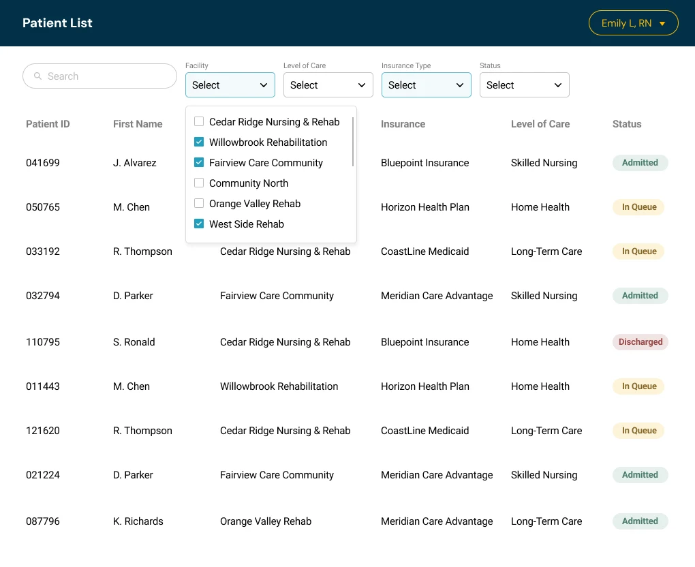
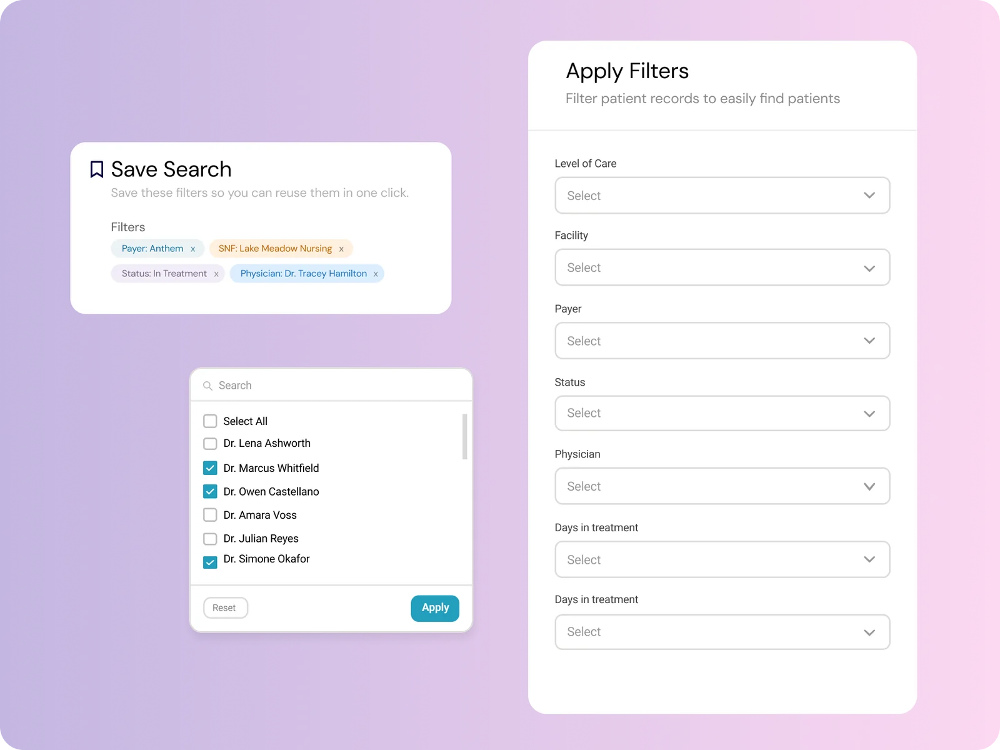
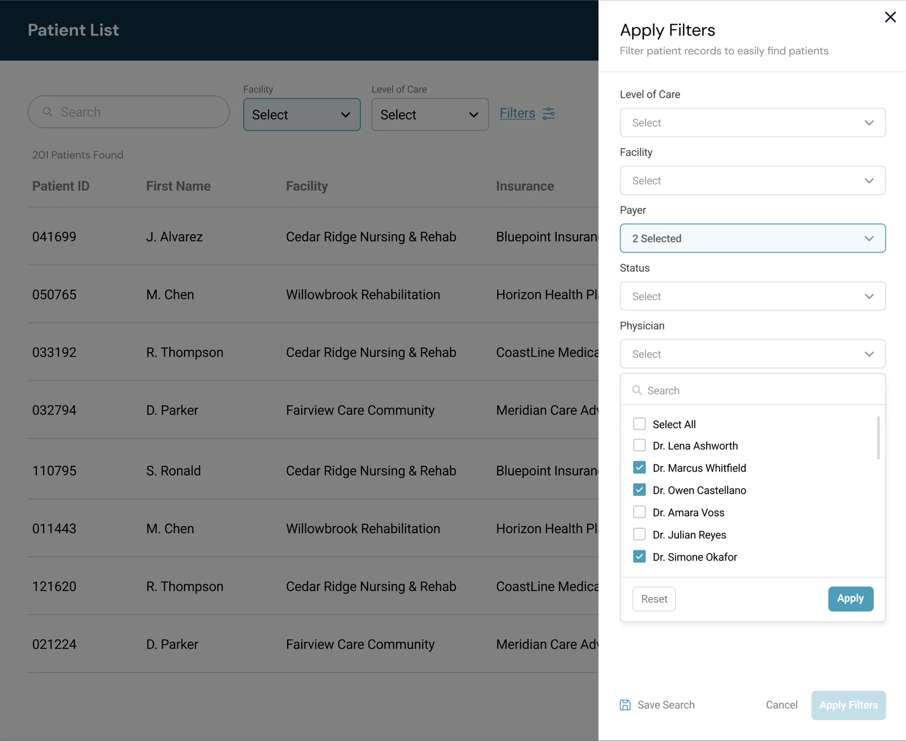

Redesigning the filter experience in a daily clinical tool
CompanyOlio Health
RoleUX Designer
UsersAll clinical & admin staff
FocusInteraction design, usability
The mockups below are original recreations I built to represent this project, using fake patient data and a generic interface I designed for this portfolio. They are not screenshots of the real Olio Health product. The problem, design decisions, and outcomes described are accurate to the real project.
The problem
Every clinical and administrative staff member touched this patient queue daily, and the filters were one of the most-used, most-frustrating parts of it. They sat as a row of individual dropdowns across the top of the screen, and a few specific pain points kept showing up again and again:
No way to see what was selected at a glance. Once a few filters were applied, there was no clear summary of the active state.
Selecting multiple values meant clicking through each one individually. For staff filtering across many facilities or insurance types, this sometimes meant up to 50 separate clicks for a single search.
No way to search within a filter. Long lists had to be scanned manually, one option at a time.
Not enough filters, period. The layout only had room for a handful before it got cramped.
No way to save a search. Staff rebuilt the same filter combinations from scratch, every single day.
Opening a single dropdown shows how bare-bones they were. It was a plain list of checkboxes: no Select All, no search, and no Reset or Apply. Staff had to scroll and tick every value one by one, and the panel gave no summary of what was already chosen.

Before: simplified recreated mockup. One open dropdown: just a scrolling list of checkboxes.
The redesign
We moved away from the long row of inline dropdowns. Most filters now live behind a single "Filters" button that opens a full slide-out panel, titled Apply Filters, and the two most-used filters stay in the row as quick filters. Inside the panel, staff could finally:
Select all values in a category at once, instead of clicking through each one individually.
Search within any filter, instead of scanning long lists manually.
Save a search for one-click reuse, so a daily filter combination didn't have to be rebuilt from scratch. When saving, the active filters appear as removable chips, so staff can check exactly what they're saving.
Reset or apply in one step, with clear buttons at the bottom of every filter list.
The slide-out format also gave us the room we didn't have before, so we could add filters that simply couldn't fit in the old top-row layout, such as physician and days in treatment.

After: simplified recreated mockup. The Apply Filters panel, a searchable list with Select All, and the Save Search step.

After: simplified recreated mockup. Facility and Level of Care stay in the row as quick filters, and everything else lives in the Apply Filters panel.
Quick filters
Two filters stayed in the row on purpose: Facility and Level of Care. Clinical staff told us these were the two they used the most, and they called them "quick filters." Keeping them one click away meant the most common searches didn't need the panel at all, while everything else moved inside the Filters button.
50→1
clicks to select all values in a category
↓↓
clicks and scrolling for every staff member, every day
Instant
positive feedback after launch
Reflection
This project didn't involve a flashy new feature, it was a filter panel. But every single user touched it, every single day, often dozens of times per shift. That's exactly why it mattered: the small, repeated frictions, 50 individual clicks instead of one, no way to save a daily search, compound fast at that scale. Fixing them wasn't glamorous, but it was one of the most immediately appreciated changes I've shipped.